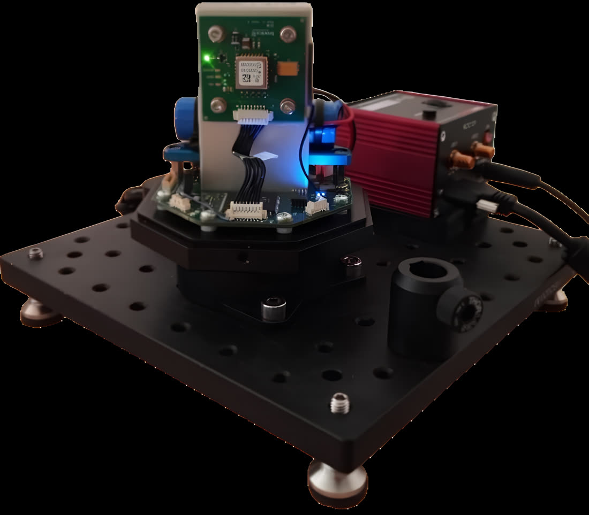

Écart-type · 20 essais de recherche du Nord
0,5° → 0,201°
≈ −60 % grâce à deux gyroscopes
PFE – Développement firmware d'un démonstrateur embarqué
Tronics Microsystems – TDK Group
- Firmware C avec STM32 HAL sur STM32H563 (Cortex-M33) : acquisition et traitement des données de deux gyroscopes, avec DataReady, interruptions EXTI et DMA.
- Échanges I²C avec la jauge de batterie BQ27427.
- Pilotage du module BLE u-blox ANNA-B412 par commandes AT via UART / RTS-CTS.
- Analyse et correction d'anomalies en débogage sur cible : ST-LINK, oscilloscope, analyseur logique, multimètre.
- Tests fonctionnels et de robustesse, notamment sur la communication BLE.
- Modification du schéma électronique sous Altium Designer.
- IHM Python pour piloter les acquisitions, visualiser et analyser les mesures.